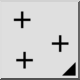
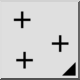

Enkel punt
Werkbalk / icoon:


Menu: Tekenen > Punt > Enkel punt
Sneltoets: P, O
Opdrachten: point | po
Dit is een automatische vertaling.
Werkbalk / icoon:


Menu: Tekenen > Punt > Enkel punt
Sneltoets: P, O
Opdrachten: point | po
Dit commando wordt gebruikt om enkele punten te tekenen. Punten worden visueel weergegeven door een klein kruisje.